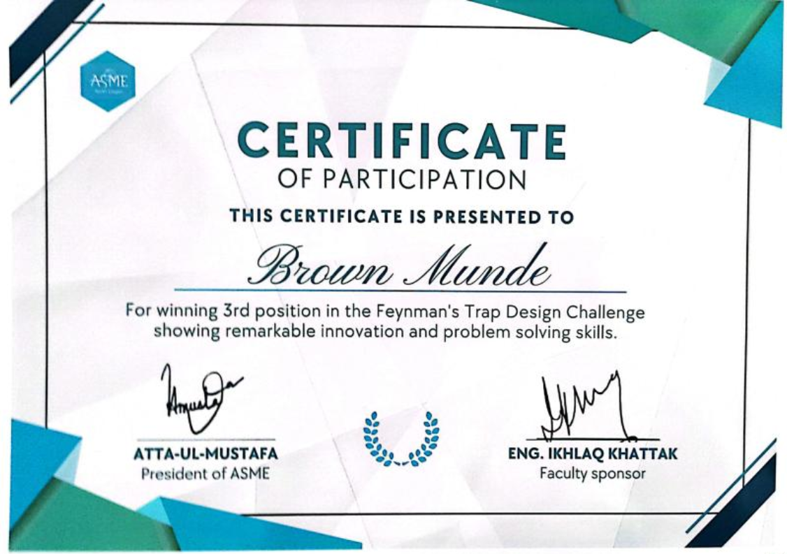

In this group project, our goal was to build a mouse trap-powered car that could travel as far as possible in a straight line. We were a team of five, and everyone worked together to come up with a design that minimized friction and maximized distance.
We spent time testing different wheel sizes, axle placements, and string lengths to figure out what worked best. Along the way, we learned a lot about how small changes can make a big difference in performance. It wasn't just about building the car—it was about constantly improving the design based on what we observed during testing.
This project really helped me develop my teamwork and problem-solving skills. It also gave me hands-on experience with iterative design and how important it is to test and refine your ideas. In the end, our car traveled the third longest distance, and we ended up placing 3rd overall, which was a great result for us.
